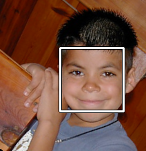

FaceDetect.jl

OpenCV based face detection in Julia
Examples
using FaceDetect
using OpenCV
# Load the built-in Haar cascade files if needed
FaceDetect.loadcascades()
# Read an image and detect faces: returns vector of bounding boxes for detected faces
img = OpenCV.imread("groupphoto.jpg", OpenCV.IMREAD_GRAYSCALE)
faces = FaceDetect.facedetect(img; biggest = true, min_neighbors = 5)
println("Detected $(length(faces)) face(s)")
for (x, y, w, h) in faces
println("Face: x=$x, y=$y, width=$w, height=$h")
end
# Simple file input and output using the command interface with a vector of command strings
# The "-o" string indicates the next string in the vector is the output file name
# the last string, a name not preceded by an option, is by default the input file name
facedetect(["-o", "detectedfaces.png", "groupphoto.jpg"])
# The /bin directory has the executable for the command-line interface of the face detection tool.
# Use it like this at command line (may need to be renamed with .cmd for Windows):
# ./bin/facedetect -o detectedfaces.png groupphoto.jpg
# Another example: this returns (equalized_image, detected_faces)
img, faces = FaceDetect.facedetect("groupphoto.jpg"; biggest = true)
println("Detected $(length(faces)) face(s)")
for (x, y, w, h) in faces
println("Face: x=$x, y=$y, width=$w, height=$h")
end
# And if you want a visual example, with use of OpenCV display functions:
using FaceDetect
using OpenCV
loadcascades() # Call before using facedetect, to set up the CASCADES dict. Downloads data if missing.
# Manual image handling: facedetect's size filtering assumes a single-channel image,
# so detect on grayscale and draw onto a new color copy for display/output.
img_gray = OpenCV.imread("groupphoto.jpg", OpenCV.IMREAD_GRAYSCALE)
img = OpenCV.imread("groupphoto.jpg")
faces = FaceDetect.facedetect(img_gray; biggest = false, min_neighbors = 5)
for (x, y, w, h) in faces
p1 = OpenCV.Point{Int32}(Int32(x), Int32(y))
p2 = OpenCV.Point{Int32}(Int32(x + w), Int32(y + h))
OpenCV.rectangle(img, p1, p2, (0, 255, 255); thickness = 2)
end
OpenCV.imwrite("faces_detected.jpg", img)
OpenCV.imshow("Detected Faces", img)
OpenCV.waitKey(0)
OpenCV.destroyAllWindows()
Installation
using Pkg
Pkg.add("FaceDetect")Functions Reference
FaceDetect.FaceDetectFaceDetect.croprectFaceDetect.downloadcascadexmlFaceDetect.drawresultsFaceDetect.facedetectFaceDetect.facedetectFaceDetect.facedetectFaceDetect.fatalFaceDetect.grayarrayFaceDetect.loadcascadesFaceDetect.mssim_normFaceDetect.normalizerectFaceDetect.pairwisesimilarityFaceDetect.parseargsFaceDetect.printhelpFaceDetect.rankfacesFaceDetect.shavemargin
FaceDetect.FaceDetect — Module
Julia face detection using OpenCV.jl.
FaceDetect.croprect — Function
croprect(im, rect, shave=0)Crop im to the rectangle rect = (x, y, w, h), optionally shaving shave pixels off each edge. Converts from OpenCV's zero-based coordinates to Julia's one-based array indexing. Returns partial copy of the image.
FaceDetect.downloadcascadexml — Method
downloadcascadexml(relative_path, dest_path)Download a Haar cascade XML file from the official OpenCV GitHub repository into dest_path if it is not already present locally.
FaceDetect.drawresults — Method
drawresults(input_path, output_path, features, scores, best, debug)Draw bounding boxes (and, in debug mode, score metrics) for the detected features onto the image at input_path, then write the result to output_path.
FaceDetect.facedetect — Function
facedetect(args=ARGS)Entry point for the facedetect command-line tool: parses options, loads cascades, detects (and optionally searches for) faces, and prints or draws the results.
FaceDetect.facedetect — Method
facedetect(im::AbstractArray; biggest=false, scalefactor=1.1, min_neighbors=5, min_frac=1/20, max_frac=1/2)Detect faces in the grayscale image im using the loaded Haar cascade, optionally restricting the search to the biggest face.
min_neighbors controls how many overlapping candidate rectangles must agree before a detection is accepted; raising it (from the OpenCV default of ~3-4) trades recall for precision and is the most effective lever for suppressing false-positive detections without new training data. scalefactor and the min_frac/max_frac size bounds can be tightened similarly to prune spurious small/large matches.
FaceDetect.facedetect — Method
facedetect(path::AbstractString; biggest=false)Load the image at path, equalize its histogram, and run facedetect on it.
FaceDetect.fatal — Method
fatal(msg)Print an error message msg to stderr and throw an exception with the message.
FaceDetect.grayarray — Method
grayarray(im)OpenCV.jl represents a grayscale Mat with a third, singleton channel dimension. Drop the singleton and return a 2-dimensional matrix for numerical operations.
FaceDetect.loadcascades — Function
loadcascades(data_dir=DATA_DIR)Load the Haar cascade classifiers listed in PROFILES from data_dir into the global CASCADES dictionary.
FaceDetect.mssim_norm — Method
mssim_norm(X, Y; K1=0.01, K2=0.03, win_size=11, sigma=1.5)Compute the mean structural similarity (MSSIM) between two images. X and Y are floating point Matrix type arrays holding the image data.
FaceDetect.normalizerect — Method
normalizerect(im, rect; equalize=true, same_aspect=false)Crop and resize the face region rect from im to a normalized size. The OpenCV portion remains an OpenCV Mat. Once normalization is complete, the single-channel image is converted to a 2-D Julia array.
FaceDetect.pairwisesimilarity — Method
pairwisesimilarity(im, features, template; mssim_args...)Compute the MSSIM score between template and each detected face rectangle in features, after normalizing each face region.
FaceDetect.parseargs — Method
parseargs(args)Parse the facedetect command-line arguments into an options dictionary.
FaceDetect.printhelp — Method
printhelp()Print the command-line usage message for the facedetect tool.
FaceDetect.rankfaces — Method
rankfaces(im, rects)Score and rank candidate face rectangles rects detected in im, returning the per-rectangle scores and the index of the best match.
FaceDetect.shavemargin — Method
shavemargin(im, margin)Remove margin pixels from each edge of im, supporting both 2-D and channel-first 3-D arrays.